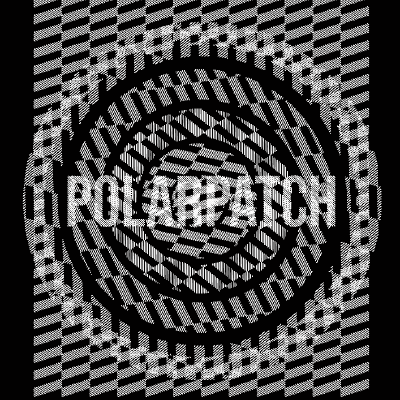

ARCTIC SCREAM at a glance
Arctic Scream p0larpatch 1.0 · drone firmware for the M-VAVE FM-1 by PolarPatch · four tracks, eight sources, and a feedback loop that wakes on its own
Summoning the screams from the permafrost
THE FAST WAY
- Turn PRESETS to DRONE and the last six: POLAR HOWL, WENDIGO, FROZEN SCREAM, WHITEOUT, DEAD SIGNAL, ICE WRAITH (ICE WRAITH is there from the start).
- Press a low key once. LATCH is on: the note stays until you press the key again.
- Wait. The loop grows out of silence by itself in a few seconds.
- Press EDIT and turn KNOB 1–4: you are playing the loop itself.
FROM NOTHING
- EDIT twice to SOURCE, KNOB 1 to HOWL, KNOB 2 LATCH ON.
- EDIT again (SOUND), hold a note, and bring FEEDBACK up slowly.
THE THRESHOLD: KNOB 1 FEEDBACK
The sound lives on the edge. Set FEEDBACK just under the threshold and play short notes: each key is a burst that provokes the loop, which flares and dies away. Higher up it screams on its own; the saturation keeps it from blowing up.
- K2 BODY
- A second resonance, 1–17 ms. It glides when turned, so the whole sound bends; it also wanders a little by itself. Short = metal, long = hollow.
- K3 DAMP
- The loop's filter: a scream (18 kHz) down to a growl under the ice (100 Hz).
- K4 DRIVE
- Clean to torn. High DRIVE + low DAMP is the dirtiest beast.
MAKE IT WORSE
- LFO → FEEDBACK
- LFO page, DESTINATION FEEDBACK, slow RATE: the loop breathes in and out of the threshold, waking and falling asleep.
- LFO → BODY
- A slow, twisting scream. Shape DRIFT or RANDOM for the uneasy kind.
- SCALE HORROR
- SEL → SCALE, last in the list: close semitones, every note wrong in the right way.
- DELAY > 100 %
- FX → DELAY, FEEDBACK past 100 % (to 150 %): the echo runs away and saturates. Watch the volume.
- Two HOWLs
- Two tracks of HOWL with a slightly different BODY beat against each other.
- Low notes
- Everything is an octave down already. Below ~43 Hz the string jumps an octave: a strange, shivering seam.
Getting around
- ALGORITHM
- Picks the track, T1–T4. Every page shows that track.
- PRESETS
- The next or previous sound, by category. On the sequencer: the tempo.
- SELECT
- HOME: the tempo. Sequencer: the cursor.
- KNOB 1–4
- The four values at the bottom of the screen, on every page.
- MASTER
- Volume.
- tap a button
- Its first page; tap again for the next. The header says where you are.
- OCT− / OCT+
- Octave down / up. In SAVE's pages: back / do it.
- EDIT + OCT− / +
- Undo / redo.
Turn a knob slowly for fine steps, fast to sweep. The work saves itself when the sequencer is stopped and all is silent.
Playing
- keys
- Play the selected track. The first white key is F2: an octave down, for drones.
- LATCH ON
- Press once to start, again to stop (EDIT → SOURCE, KNOB 2). All the HOWLs and SVALBARD CELLO latch.
- hold SEL
- Chord mode on / off: one key, a whole chord.
- hold ARP
- Arpeggiator on / off. It plays the keys held (with LATCH: they stay).
- hold GLO + key
- White keys 1–4 mute T1–T4, 5–8 solo them.
Six voices are shared by the four tracks. A note beyond six takes the oldest, faded out.
Sound: EDIT
EDIT: SOUND → (FM: FM ALGO → FM OP →) SOURCE.
| SOURCE | K1 | K2 | K3 | K4 |
|---|---|---|---|---|
| VA | WAVE | DETUNE | CUTOFF | RESONANCE |
| FM | PATCH | BRIGHT | DECAY | DETUNE |
| SAMPLE | SLOT | START | LENGTH | REVERSE |
| VOICE | VOWEL | SHIFT | BUZZ | BREATH |
| WHEEL | DRAWBARS | PERC | CLICK | DRIVE |
| PHYS | MODEL | STRUCTURE | DAMP | BOW |
| PHASE | WAVE | WAVE2 | DCW | DETUNE |
| HOWL | FEEDBACK | BODY | DAMP | DRIVE |
- FM ALGO
- ALGO 1–32, FEEDBACK, OP (pick 1–6), FINE.
- FM OP
- RATIO, LEVEL, ATTACK, DECAY of that operator.
ENV and LFO
| K1 | K2 | K3 | K4 | |
|---|---|---|---|---|
| ENV | ATTACK | DECAY | SUSTAIN | RELEASE |
| LFO | RATE | DEPTH | DESTINATION | SHAPE |
- DESTINATION
- PITCH, VOLUME, PAN, the source's four knobs by name, REV SEND, GRAIN SEND, the track's CUTOFF.
- SHAPE
- SINE, TRIANGLE, SAW UP, SAW DOWN, SQUARE, RANDOM, DRIFT.
The LFO never restarts with a note, so drones keep breathing. RATE goes from 60 s a cycle to 20 Hz.
Scales and chords: SEL
- SCALE
- ROOT, SCALE (shared by all tracks): the keys snap to it. Last in the list: HORROR.
- CHORD
- CHORD TYPE (SCALE, MIN, MAJ, SUS2, SUS4, FIFTH, MIN7, MAJ7, DIM, ADD9, CLUSTER), VOICING (CLOSE, OPEN, SPREAD, +OCT, DROP).
- ARP
- MODE (UP, DOWN, UP-DOWN, RANDOM, AS PLAYED, CHORD), RATE, OCTAVES 1–4, GATE.
Sequencer: SEQ, PLAY, REC
| K1 | K2 | K3 | K4 | |
|---|---|---|---|---|
| GRID | NOTE | CHANCE | RATCHET | LENGTH |
| PATTERN | STEPS | DIVISION | SWING | PLAY MODE |
- PLAY / REC
- Start / stop; record. Stopped + REC: each key fills a step. Playing + REC: notes land on the nearest step.
- hold SEL + knob
- Lock a sound value to the step. + OCT−: clear its locks.
- hold SEQ + SELECT
- The pattern's length.
HOLD SEQ + A WHITE KEY
Effects: FX
| K1 | K2 | K3 | K4 | |
|---|---|---|---|---|
| TAPE | WOW | SATURATION | TONE | HISS |
| GRAIN | SIZE | DENSITY | SCATTER | MIX |
| DELAY | TIME | FEEDBACK (to 150 %) | WEAR | MIX |
| SPACE | SIZE (to INF) | DAMP | MIX | PRE-DELAY |
HOLD FX + A WHITE KEY (WHILE HELD)
FREEZE is a toggle: tap to hold the grain cloud, tap again to let go. The sends: MIXER 1, or FX on HOME.
HOME and the mix
| K1 | K2 | K3 | K4 | |
|---|---|---|---|---|
| HOME | VOLUME | CUTOFF | RESONANCE | FX |
| MIXER 1 | LEVEL | DLY SEND | REV SEND | GRAIN SEND |
| MIXER 2 | PAN |
HOME draws each track's wave as it plays. FX turns the track's three sends together: 0 dry, 100 % as set, 200 % twice as wet.
Saving and loading
HOLD SAVE + A WHITE KEY
- SAVE → SOUNDS
- SLOT, CATEGORY, TYPE, ACTION (LOAD, SAVE, CLEAR): 64 slots for your own sounds. OCT+ does it.
- SAVE → PROJECTS
- SLOT A–D, ACTION (LOAD, SAVE, ERASE, NEW). NEW: four tracks of ICE WRAITH, empty patterns.
- GLO → SONG
- SECTION, PATTERN, REPEATS, MODE (OFF, SONG, SONG LOOP). REC + PLAY there records the slots you switch to.
Settings: hold HOME
| K1 | K2 | K3 | K4 | |
|---|---|---|---|---|
| SYSTEM | COLOUR | MIDI CHANNEL | TUNE | SCREEN OFF |
| SYSTEM 2 | MIDI LEARN | SEQ MIDI OUT | SAMPLES |
- COLOUR
- ICE, AURORA, VIOLET, PLASMA.
- SAMPLES
- RESTORE, then OCT+: the four factory samples back.
- OCT− + OCT+
- Together, on SYSTEM 2: reset CPU PEAK.
Good to know
- factory sounds
- 46, in PAD, DRONE, BELL, VOICE, ORGAN, KEYS, OTHER, TEXTURE. Your own come after each category's.
- HOWL is loud
- At full FEEDBACK and DRIVE with DELAY past 100 %, mind MASTER and your ears.
- not GR!MM's saves
- Arctic Scream keeps its own saves. Coming from GR!MM, projects and slots start empty; samples stay.
- samples
- Four slots, your own WAVs from the editor.
- stuck?
- The Rescue page on the FM-1 Firmware Hub.
In the browser demo
- Z–/
- White keys from F2 · S–' black · Q–O B3–G4.
- 1–6
- FX, SEL, ENV, LFO, EDIT, GLO.
- 7–=
- HOME, SAVE, ARP, SEQ, PLAY, REC.
- [ ]
- OCT−, OCT+ · ↑ ↓ SELECT · ← → ALGORITHM.
- combos
- Hold a button's key and press others. Right-click or Shift-click holds a button.